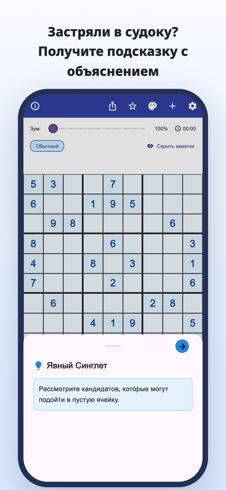
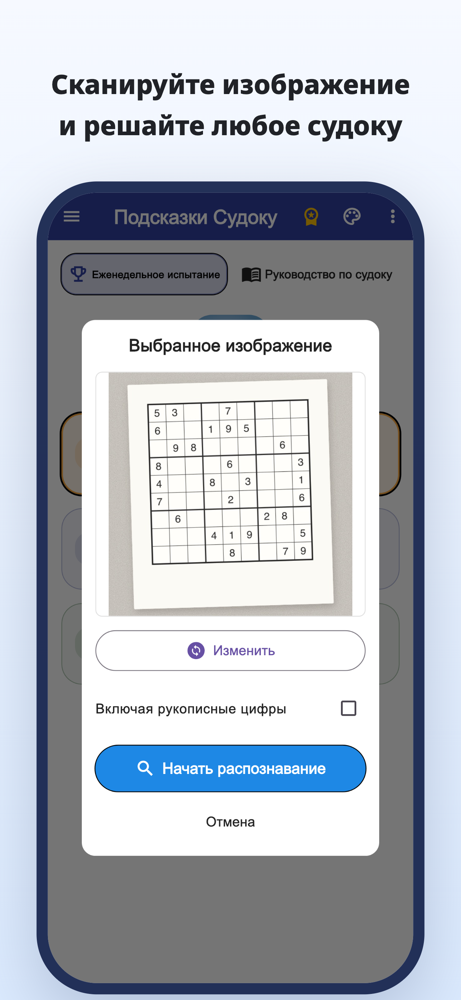
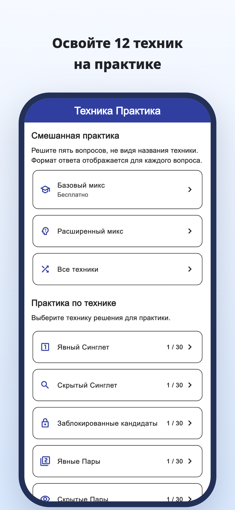
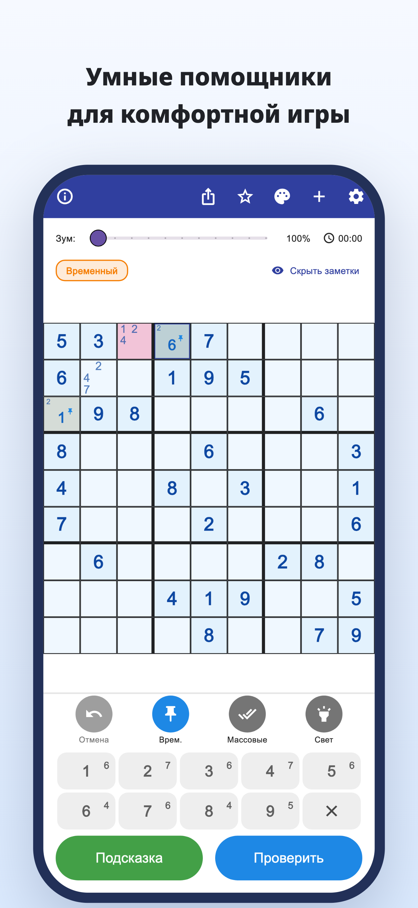
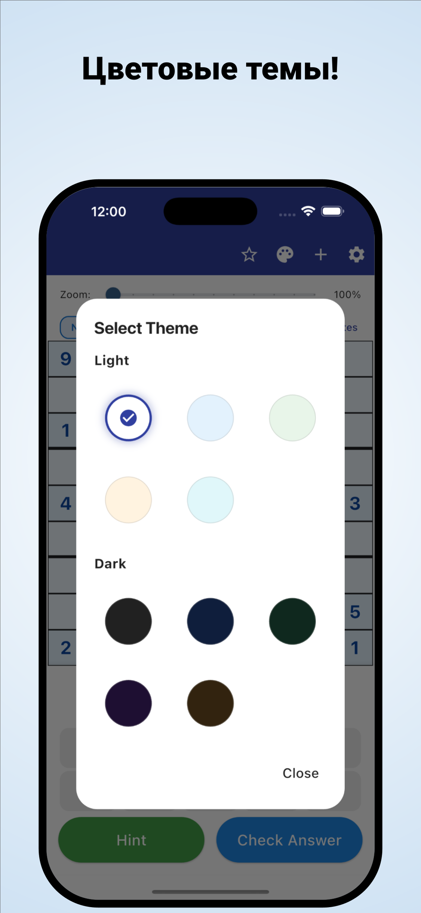

«Куда смотреть дальше?»
Вы снова и снова проверяете сетку,
но всё равно не можете сдвинуться с места.
Сканирование камерой · Подсказки с объяснением
Сканируйте судоку из газет и журналов.
Поймите, почему подходит цифра, и продолжайте решать самостоятельно.
iPhone и Android / Бесплатная загрузка · Покупки в приложении





Вам это знакомо?
Вы снова и снова проверяете сетку,
но всё равно не можете сдвинуться с места.
Почему именно эта цифра должна стоять здесь?
Просто переписать решение недостаточно.
Хочется взять судоку, которое решаете на бумаге,
и продолжить в приложении.
Превратите затруднение в зацепку
Распознайте судоку из газеты или журнала по фотографии и сократите ручной ввод цифр.
Распознавание по фотоПрочитайте обоснование хода и используйте его для следующего шага, а не просто вписывайте ответ.
Подсказки с объяснениемИзучайте объяснения и упражнения по отдельным приёмам, затем тренируйтесь замечать их самостоятельно.
Тренировка приёмовДля тех, кому нравится находить решение самому
Импортируйте привычную головоломку и продолжите с того места, где остановились.
Разберитесь в сложном месте и продолжайте самостоятельно.
Для новичков и тех, кто готов изучить ещё один приём.
Читайте · Пробуйте · Тренируйтесь
Начните в браузере.
Прочитайте руководство или решите целую головоломку.
От заметок о кандидатах до объяснений приёмов и упражнений.
Попробуйте решить всю сетку, обращаясь к подсказкам при необходимости.
Узнайте правила и почувствуйте удовольствие от связи подсказок.
Посмотрите на клетку в синей рамке и откройте подсказку.
Подсказка к следующему ходу
Проверьте кандидатов пустой клетки.
Этот веб-пример позволяет попробовать один ход. В приложении отображение отличается.
Когда судоку ставит в тупик.
Скачать Подсказки Судоку
Бесплатная загрузка · Покупки в приложении
Приложение можно бесплатно скачать и попробовать. Подсказки, проверка ответов и сканирование изображений ограничены; для некоторых действий нужно посмотреть видеорекламу.
Premium — месячная или годовая подписка. Она убирает рекламу и даёт неограниченные подсказки и проверки ответов. Сканирование изображений ограничено и в Premium. Цены и условия указаны в приложении.
Импортируйте фотографию судоку. Проверьте распознанные цифры и исправьте ошибки до начала игры. Поддерживается классическое судоку 9×9.
В приложении есть встроенные головоломки, объяснения и упражнения по приёмам. Для некоторых головоломок и упражнений нужен Premium.
Кроме демонстрации одного хода, в браузере можно решить целую головоломку и изучить руководства и упражнения.
Руководство по судоку